Часы
Раздел «Часы» энциклопедии SUNLIGHT: 27 материалов с разбором деталей и советами по выбору.
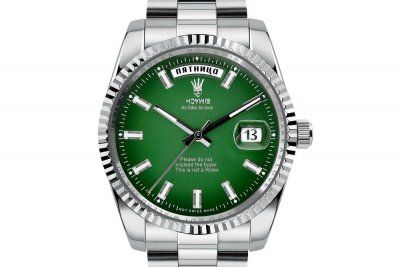
30.08.2026 Часы как подарок: почему настоящая ценность измеряется не временем, а историейЧто подарить мужчине, который уже имеет всё? Что можно подарить на день рождения человеку, для которого важны... 18.01.2023 На какой руке носят часы мужчины и женщины и как правильно носить часы на рукеЕще пару десятков лет назад часы были практически неотъемлемыми атрибутами для большей части человечества: их носили...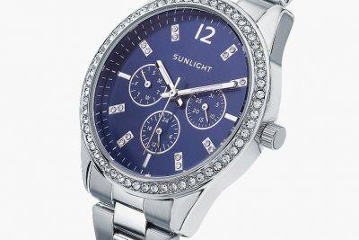
18.01.2023 Из чего состоят наручные часы: изучаем детали механических и кварцевых часовДля большинства из нас устройство часов покрыто тайной: они тикают, есть стрелки, которые показывают время – вот, в...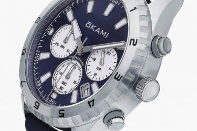
18.01.2023 Что такое безель на наручных часахПросто часы с функцией измерения времени – это не очень интересно, а иногда и недостаточно для комфортного...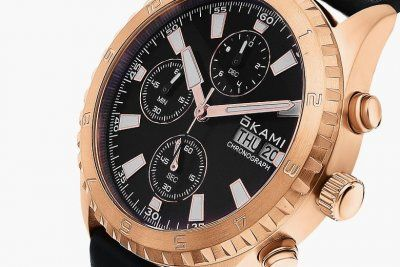
16.01.2023 Хронограф в часах — что это такое и как работаетВ наше стремительное время минуты решают многое, но на более мелкие промежутки времени мы редко обращаем внимание. А...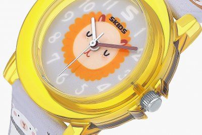
16.08.2022 Как выбрать детские часыСовременные малыши достаточно рано начинают интересоваться взрослыми «игрушками»: телефонами, бытовой техникой и...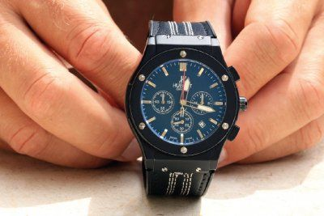
09.01.2022 Турбийон в наручных часах — что это такоеТурбийон – один из самых сложных и дорогостоящих механизмов в наручных часах. Его прямое предназначение –... 18.12.2021 Как выбрать часы по техническим характеристиками, бренду или дизайнуКогда-то наручные часы носил каждый. С изобретением смартфонов ситуация кардинально изменилась: часы перестали быть...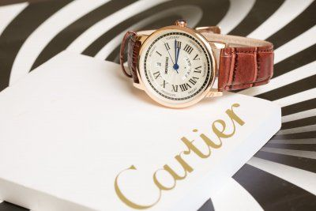
08.12.2021 Как выбрать мужские часы на подарок или для себяГоворят, что с ростом и взрослением мальчиков увеличивается и цена их игрушек. Да, в каждом мужчине дремлет ребенок,... 29.11.2021 Рейтинг швейцарских часов: таблица с топовыми моделями женских и мужских часовПроизводство часов в Швейцарии возведено в ранг искусства. У непосвященного обывателя словосочетание «швейцарские...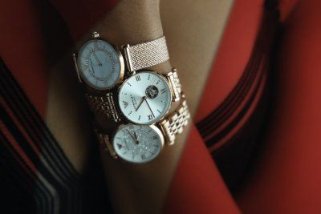
22.11.2021 Самые популярные часы в мире — ТОП-20 моделейКазалось бы, с наступлением эпохи смартфонов мировая часовая индустрия должна впасть в глубокий коллапс. Но ничуть... 22.11.2021 Выбираем лучшие часы: рейтинг ТОП-20 моделейУ каждого человека свои вкусы и требования, но существуют вещи, которые по душе практически всем. Нет, пожалуй, на... 22.11.2021 ТОП-15 недорогих часов от лучших брендовС появлением смартфонов и других умных гаджетов потребность в наручных часах практически отпала. Если раньше часы... 17.11.2021 Рейтинг лучших российских часовМногие знаменитые часовые бренды были рождены в России. Чего стоит один только лейбл «Павел Буре»! Сейчас...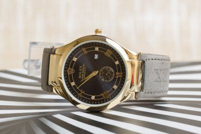
17.11.2021 ТОП-10 самых дорогих часов RolexЕсли спросить у любого человека на улице, какие часы самые дорогие в мире, большинство с уверенностью скажет:... 17.11.2021 Лучшие бренды часов: рейтинг ТОП-10 самых дорогих и престижных марокНаручные часы постепенно утрачивают свое утилитарное предназначение: зачем они нужны, если точное время мы всегда...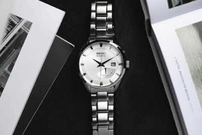
16.11.2021 ТОП-10 лучших японских часовМы привыкли, что лучшие часы делают в Швейцарии. Однако в последние десятилетия их активно теснят производители из...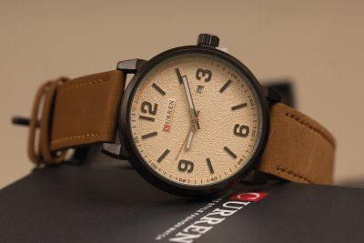
16.11.2021 Лучшие китайские часы — рейтинг ТОП-10 брендов и моделейДавно миновали те времена, когда все китайское считалось откровенно низкокачественным. Многие известные мировые... 16.11.2021 Рейтинг лучших механических часов: ТОП-15 самых надежных моделейВ самом начале своей истории наручные механические часы считались просто украшением и исключительно женским... 16.11.2021 Какие часы самые точные в миреКогда-то люди определяли время по солнцу. Солнечные часы давали огромную погрешность, но при том ритме жизни десять...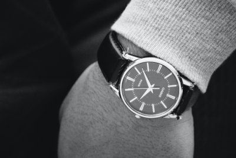
11.11.2021 Рейтинг лучших часов бренда CasioCasio называют самым русским брендом из всех японских. И заслуженно: разнообразная электроника этого авторитетного...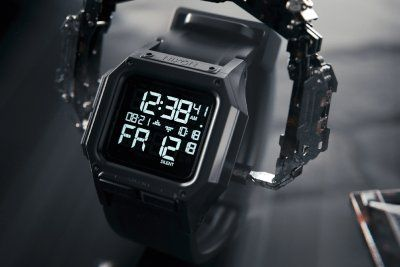
11.11.2021 Лучшие военные часы для туризма и походовЧасы давно перестали быть просто приборами для определения точного времени. Одни превратились в символы статуса,...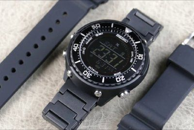
10.11.2021 Лучшие электронные часы в 2026 годуКогда-то, в 70–80-х годах прошлого столетия, электронные часы переживали небывалый взлет и уверенно теснили... 10.11.2021 Рейтинг водонепроницаемых часов для дайвинга: ТОП-10 лучших моделейДайвинг постепенно переходит из разряда увлечений для избранных в ранг модных хобби. Все больше людей занимаются... 03.11.2021 Лучшие бренды швейцарских часов: рейтинг ТОП-10 производителейКак же тяжело составлять рейтинг швейцарских часовых брендов по престижности, ибо каждый уроженец этой страны хоть...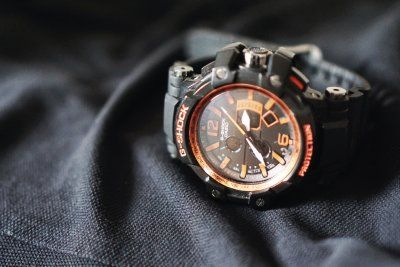
29.10.2021 ТОП-10 самых надежных часовМир меняется, и мы вместе с ним. Большинство из нас проживает в тепличных (во всяком случае, по меркам наших...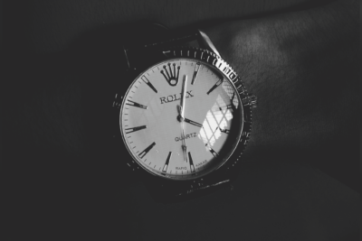
20.10.2021 ТОП-5 самых дешевых часов RolexПредставительницы прекрасного пола из высшего общества стараются перещеголять друг друга роскошными и оригинальными...